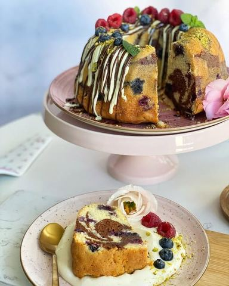

Moja beleška
SačuvanoSastojci
- Sastojci
Priprema
Puter sobne temperature potrebno je mutiti sa šećerom nekih 2 minuta, pa tome dodati kašičicu arome vanile. Sjediniti pa postepeno dodavati jedno po jedno jaje muteći. Lagano dodavati mleko, muteći, pa na kraju iz dva puta brašno promešano sa praškom za pecivo i soli. Umućenu smesu podeliti na dva dela u jedan dodati istopljenu crnu u drugi istopljenu belu čokoladu. U kalup redjati naizmenično po kašiku i jedne i druge smese kako bi kolač bilo lepo šaren na preseku 🥰 Kada završite jedan ceo krug sa sipanjem smese u kalup, dodajte šaku borovnica koje ste posuli kašikom brašna i protresli, kako one ne bi pale na dno. I tako dok ne ponestane smese ☺️ Kuglof se peče u zagrejanoj rerni na 165C, meni je bilo dovoljno 50 minuta, ali uvek možete proveriti čačkalicom. Ne zaboravite da kalup lepo premažite puterom ili uljem pa pospete brašnom kako se kolač ne bi zalepio za kalup, a prohladjenog ga vadite ☺️ Možete ga posuti samo šećerom u prahu ili nekom topljenom omiljenom čokoladom, dodati po neku svežu voćkicu i uživati.
Originalni opis sa Instagrama
Kuglof od bele i crne čokolade 🌸 Stiže obećani recept za kolač koji je tako jednostavan, lagan za pripremu i od sastojaka koje uvek imamo u kući ☺️ Moja dečica bi menjala svaki sa filovima i korama, komplikovanim prelivima za jedno ovo parčence. Ide uz šolju mleka, čaja, ali se sjajno slaže i uz kaficu za nas malo veću decu 🥰 Sastojci: •270 gr brašna •1 1/2 kašičica praška za pecivo •prhosvat soli •120 gr bele čokolade •120 gr crne čokolade •170 gr putera •200 gr šećera •kašičica arome vanile •4 jaja •120 ml mleka •po ukusu dodati 150 - 200 gr borovnica ili malina Puter sobne temperature potrebno je mutiti sa šećerom nekih 2 minuta, pa tome dodati kašičicu arome vanile. Sjediniti pa postepeno dodavati jedno po jedno jaje muteći. Lagano dodavati mleko, muteći, pa na kraju iz dva puta brašno promešano sa praškom za pecivo i soli. Umućenu smesu podeliti na dva dela u jedan dodati istopljenu crnu u drugi istopljenu belu čokoladu. U kalup redjati naizmenično po kašiku i jedne i druge smese kako bi kolač bilo lepo šaren na preseku 🥰 Kada završite jedan ceo krug sa sipanjem smese u kalup, dodajte šaku borovnica koje ste posuli kašikom brašna i protresli, kako one ne bi pale na dno. I tako dok ne ponestane smese ☺️ Kuglof se peče u zagrejanoj rerni na 165C, meni je bilo dovoljno 50 minuta, ali uvek možete proveriti čačkalicom. Ne zaboravite da kalup lepo premažite puterom ili uljem pa pospete brašnom kako se kolač ne bi zalepio za kalup, a prohladjenog ga vadite ☺️ Možete ga posuti samo šećerom u prahu ili nekom topljenom omiljenom čokoladom, dodati po neku svežu voćkicu i uživati. Nadam se da će se i u vašoj kući voleti ☺️ • • • #kuglof #kuglofsacokoladom #kuglofsaborovnicama #kolaci #receptizakolace #mojirecepti #brzoilako #ukusnoifino #zebrakuglof #zebrakolac #idejezadezert #zadovoljnahr #slatkisi #slatkirecepti #cakedecorating #zebracake #zebracakes #sweets #cakereceipes #foodphotography #foodphotooftheday #foodphotograpy